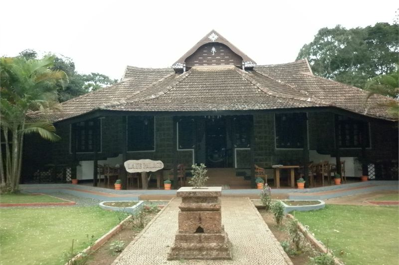
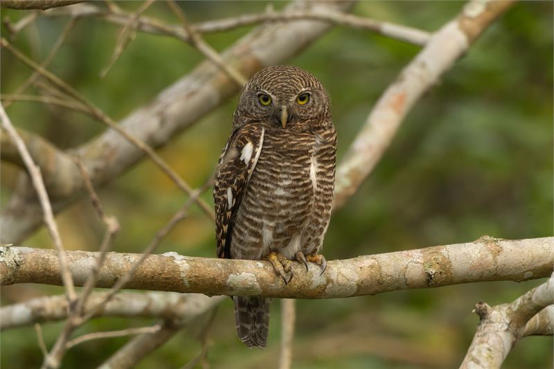

How these hotels were researched
▼- Rates: compared across more than one booking platform on the same day, quoted as a range with the month checked. Not a quote, and they move.
- Guest reviews in bulk: looking for complaints that repeat across many months, not single bad nights.
- Location: checked against a map, measured to the thing you actually came for.
- Real cost of entry: taxes, compulsory meal plans, transfers, and what is not included in the headline rate.
- What I could not confirm is said plainly in the text rather than filled in.
Sustainability in Indian hospitality ranges from genuine environmental conservation to superficial greenwashing. The phrase "eco-resort" gets used for solar-powered wildlife lodges and for concrete hotels that simply put a bamboo toothbrush in the bathroom.
Genuine eco-stays implement measurable practices: zero single-use plastic, rainwater harvesting, solar energy generation, native species reforestation, and hiring local community staff. These operational commitments increase operating costs, reflecting in nightly rates.
Rates listed below were verified in July 2026 across major booking channels, showing low monsoon rates and peak winter operating figures.
Spice Village (CGH Earth), Thekkady

Spice Village was created by CGH Earth as a re-creation of a native Mannan tribal village. Set across 12 acres of organic spice gardens on the border of Periyar Tiger Reserve, the property operates without air conditioning in rooms, relying instead on mountain air and elephant grass thatched roofs for natural cooling.
Cottages feature terracotta tiled floors, coir mats, recycled pine furniture, and solar-heated water. Single-use plastic is eliminated entirely: water is bottled in-house in glass bottles, paper is manufactured on-site from recycled cotton, and chemical pesticides are banned from the gardens.
The resort operates its own solar power plant and vermicomposting unit, transforming kitchen waste into organic fertilizer for pepper vines and cardamom plants. Local naturalists guide daily morning birdwatching walks through the grounds, identifying resident hornbills and endemic Western Ghats species.
Indicative rates range from Rs 14,200 in monsoon months to Rs 34,000 per night during winter peak. What you pay for is authentic ecological practice and peaceful spice garden surroundings. The absence of air conditioning is comfortable due to elevation (900m), but humid afternoon hours require ceiling fans.
I could not confirm what exact percentage of Spice Village's organic produce comes from their own garden versus regional spice cooperative suppliers.
| Indicative rate | Rs 14,200 to Rs 34,000 per night |
|---|---|
| Rates checked | July 2026 |
| Location | Kumily, 1 km from Periyar Tiger Reserve entrance |
| Best for | Organic spice gardens, zero-plastic eco-hospitality, and Periyar forest walks |
In its favour
- Comprehensive zero-plastic and solar-powered eco-management practices
- Lush organic spice gardens featuring cardamoms, pepper vines, and native flora
Worth knowing first
- No room air conditioning; relies on natural ventilation and ceiling fans
- Thatch roofs require periodic smoke treatment to deter insects
- No air conditioning is a genuine problem in April and May, not a lifestyle choice
Diphlu River Lodge, Kaziranga

Overlooking the Diphlu River directly facing Kaziranga National Park, this lodge features 12 raised bamboo and timber cottages constructed using local Mizing tribal techniques. The property operates on an eco-sensitive ethos focused on wildlife habitat preservation.
Cottages sit raised on stilts over paddy fields and riverbanks, featuring thatched roofs, wide cane verandas, and bamboo interiors. Solar water heaters, organic farming plots, and local villager employment define daily operations.
Rates run from Rs 22,000 to Rs 48,000 per night inclusive of meals and river walks. Guests can spot rhinos grazing on the opposite riverbank directly from cottage verandas.
| Indicative rate | Rs 22,000 to Rs 48,000 per night |
|---|---|
| Rates checked | July 2026 |
| Location | Diphlu River bank, Kaziranga (Kohora) |
| Best for | Wildlife enthusiasts seeking authentic bamboo stilt lodge eco-hospitality |
In its favour
- Direct view of Kaziranga park boundary and wild rhinos across river
- Indigenous Mizing tribal bamboo architecture and local staff
Worth knowing first
- Operating season limited to October-May due to Kaziranga monsoon floods
- High nightly rates covering full board and natural history guide services
- Rhino sightings are likely but never promised, and the lodge cannot control what the park delivers
Greenwashed Commercial Resorts
This is the trap to skip: Commercial hotels using eco-labels for marketing. Hundreds of concrete resorts display "Eco Resort" signs while running diesel generators 24/7, serving imported bottled water, and dumping untreated wastewater into nearby rivers.
Before paying premium rates for an "eco-resort", verify specific practices: Do they use solar water heating? How is greywater treated? Are staff hired locally? Does the property eliminate single-use plastic bottles?
Asking these detailed questions before paying booking deposits ensures your travel funds support genuine conservation efforts rather than marketing campaigns.
| Plastic bottle test | Glass bottles or filtration vs single-use plastic bottles |
|---|---|
| Energy test | Solar/passive cooling vs 24/7 diesel generator power |
| Waste test | On-site composting vs municipal dumping |
| Watch for | Vague "nature resort" slogans without transparent metrics |
What it costs to actually get there
True eco-lodges are rarely located near major transit hubs. Reaching Spice Village requires a winding four-hour, 140 km drive up the Western Ghats from Cochin International Airport (COK). The private taxi transfer adds roughly Rs 4,000 to Rs 5,000 each way to your travel budget.
Similarly, Diphlu River Lodge sits 200 km from Guwahati airport in Assam, requiring a four-hour highway drive. These long transfer times mean that booking a two-night stay results in spending almost as much time in a car as you do enjoying the forest. Factoring in transport costs and time is essential before booking remote sustainable properties.
When to go, and what changes
Eco-properties are deeply tied to seasonal weather patterns. In Kaziranga, the Diphlu River regularly floods the plains during the summer monsoon (June to September). Consequently, Diphlu River Lodge and the entire national park shut down operations completely during these months for safety and animal breeding.
In Kerala, Spice Village remains open year-round, but the monsoon transforms the experience. Heavy rains from June to August make forest trekking slippery and leech-heavy, though the spice gardens become intensely green and fragrant. Without air conditioning, the high humidity of May before the rains arrive can be uncomfortable for travelers unused to tropical heat.
Evaluating sustainable stays
True sustainable travel balances conservation with community benefit. Choose properties like Spice Village or Diphlu River Lodge where eco-practices are built into architectural design and daily operations rather than added as marketing slogans.
Interested in nature and wildlife stays? Read our Kerala backwater resorts guide or explore wildlife lodges in our Ranthambore wildlife lodges review.
Practical eco-travel notes
- Carry your own stainless steel water bottle and canvas shopping bag to minimize single-use waste during rural travel.
- In eco-lodges with solar heating or biomass boilers, hot water availability may peak during morning hours. Plan showers accordingly.
- Insects are part of natural forest ecosystems. Organic eco-lodges avoid heavy chemical fogging; carry natural citronella repellent for evening walks.
- Support local community economies by purchasing handicrafts, spices, and tea directly from village cooperatives affiliated with the property.